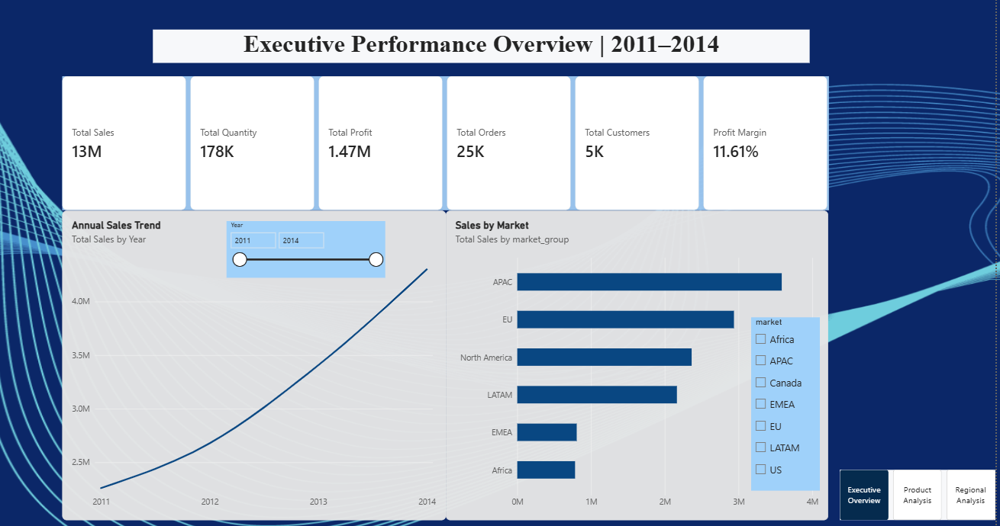
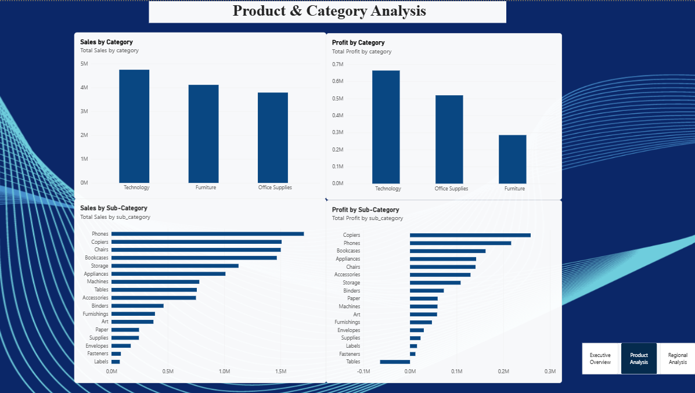
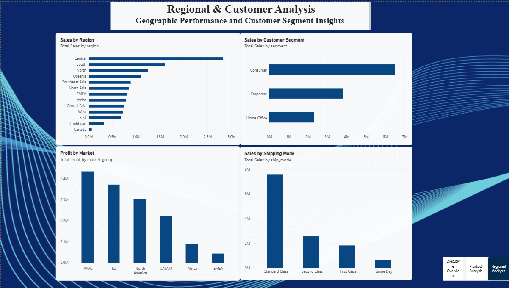

END-TO-END DATA ANALYTICS PROJECT
An end-to-end data analytics project transforming global retail transaction data into actionable business insights using Python, PostgreSQL, SQL, and Power BI.
Total Sales
Total Profit
Total Orders
Customers
PROJECT OVERVIEW
This project analyzes global retail performance across sales, profitability, customers, products, markets, and regions. The objective was to build a complete analytics workflow from raw data to an interactive business intelligence dashboard.
Analyzed sales, profits, markets, customer behavior, product performance, and seasonal trends.
Cleaned and transformed raw retail data using Python and Pandas for reliable analysis.
Used PostgreSQL and SQL queries to explore business performance and identify key trends.
Built an interactive dashboard using data modeling, DAX measures, KPIs, and business visualizations.
ANALYTICS WORKFLOW
Global retail transaction dataset
Cleaning and feature engineering
Structured data storage
Business analysis queries
Dashboard and visualization
KEY FINDINGS
The analysis revealed several important patterns across global retail operations.
Sales increased consistently between 2011 and 2014, with 2014 generating the highest overall performance.
The fourth quarter generated the highest sales and profit, highlighting strong end-of-year demand.
APAC emerged as the largest market by sales, making it a major contributor to global performance.
Higher discount levels were associated with declining profitability and potential loss-making transactions.
Sales varied significantly across months, providing opportunities for better inventory planning.
High sales do not always translate into high profitability, making profit analysis essential for decision-making.
TECHNOLOGY STACK
POWER BI DASHBOARD
The Power BI dashboard was designed across three pages to provide executive, product, and regional insights.

High-level KPIs including sales, profit, orders, customers, and market performance.

Category and sub-category performance across sales and profitability.

Regional, market, customer segment, and shipping performance analysis.
SKILLS DEMONSTRATED